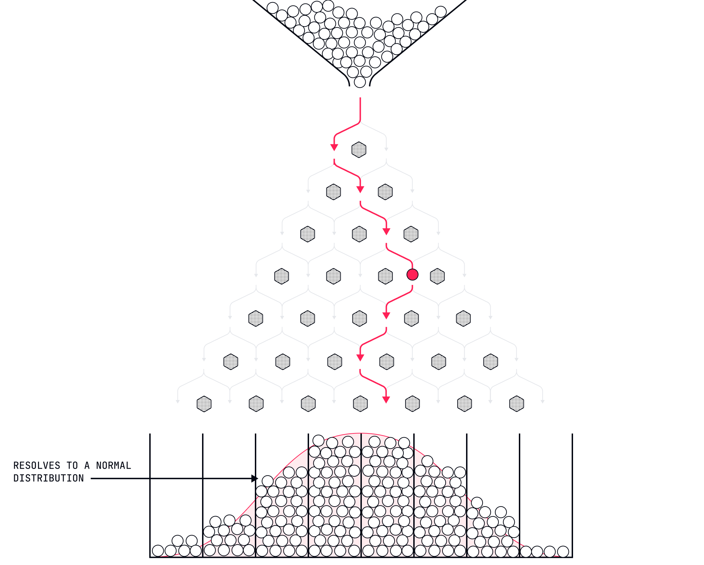
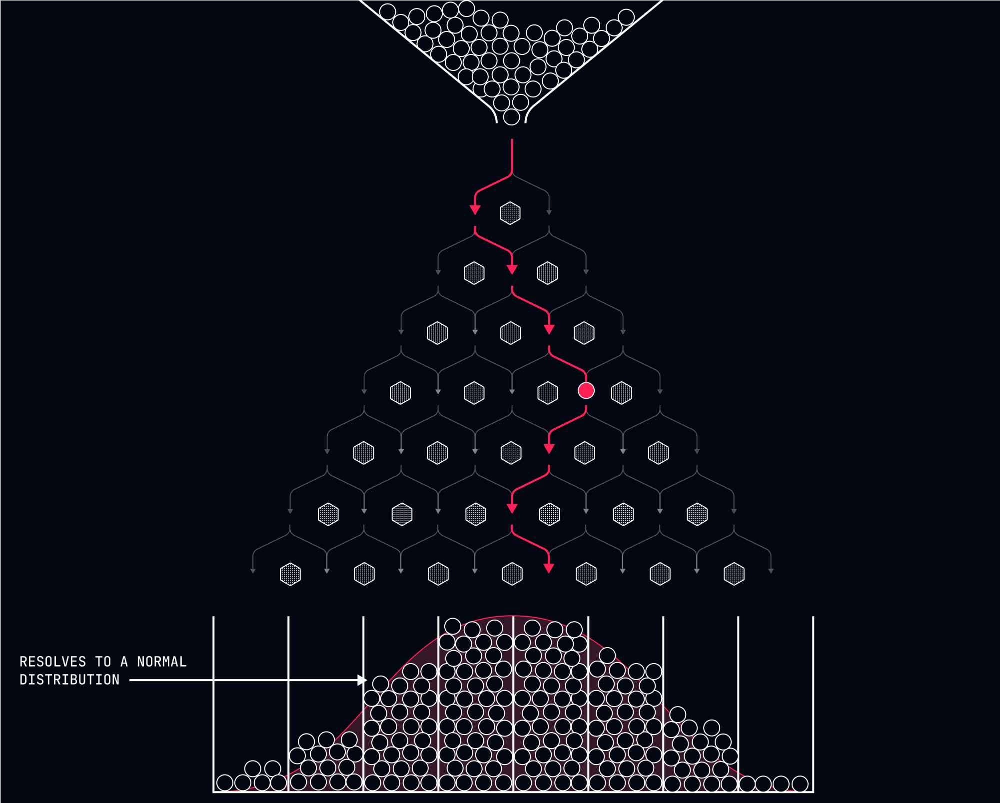

Reframing Uncertainty as Agency
If you squint, not being able to predict the future looks sort of like free will.


The Comforting Illusion
In our previous lessons, we've established that free will is an illusion—your decisions are predetermined by causal factors outside your control. Yet despite this understanding, you likely still feel as though you're making choices. This persistent sensation isn't a failure of comprehension but a feature of your relationship with uncertainty.
Here's the fascinating paradox: while you don't have free will, you also can't predict with certainty what you'll do next. This inability to predict your own predetermined actions creates a sensation that feels remarkably like choice. It's rather like watching a movie for the first time—the ending is already fixed on the film, but your inability to see it in advance creates the feeling of open possibilities.
This uncertainty isn't freedom, but it can be reframed to serve a similar psychological function.
The Unpredictability of Deterministic Systems
Even in a fully deterministic universe, complex systems remain unpredictable. This isn't because they're random, but because:
-
Computational Limitations - The human brain lacks the processing power to calculate all variables affecting a decision. You can't possibly track all the neurological, psychological, environmental, and social factors that will determine your next action.
-
Unknown Variables - Many of the factors determining your behavior operate below conscious awareness. Your decisions are influenced by subtle environmental cues, unconscious associations, and biological processes you never perceive.
-
Feedback Loops - Your predictions about your own behavior become new inputs into the causal system, creating recursive loops that complicate prediction. The person who predicts they'll be anxious at a party may, through that very prediction, guarantee or prevent the anxiety.
These limitations mean that even though your actions are determined, they remain subjectively unpredictable. This unpredictability creates a space that feels like choice, even within a deterministic framework.
The Sensation of Agency in a Determined World
The gap between determinism and predictability creates what we might call "apparent agency"—not true free will, but a subjective experience that serves many of the same psychological functions.
When you stand before two job offers, unable to predict with certainty which you'll accept, the resulting sensation feels like choice. The fact that your "decision" is predetermined by factors outside your control doesn't diminish the subjective experience of weighing options and feeling uncertainty about the outcome.
This apparent agency isn't an illusion to be dismissed but a psychological reality to be leveraged. It's rather like a placebo that works even when you know it's a placebo—understanding that your choices are determined doesn't prevent you from experiencing the psychological benefits of apparent agency.
Reframing Uncertainty as a Feature, Not a Bug
The conventional view treats uncertainty as a problem to be solved—something that prevents optimal decision-making. The deterministic perspective inverts this: uncertainty is what creates the useful sensation of agency in a determined world.
Consider two scenarios:
-
In Scenario A, you know with absolute certainty that you'll accept Job Offer X. The decision is so predetermined by your causal factors that the outcome is subjectively obvious. In this scenario, you feel no agency—just the mechanical playing out of inevitable processes.
-
In Scenario B, both job offers activate competing causal factors in your system. Job X aligns with your need for security while Job Y satisfies your desire for growth. The interaction of these factors is so complex that you genuinely cannot predict which offer you'll accept. In this scenario, you experience apparent agency—the sensation of making a choice, even though the outcome is still determined.
Scenario B isn't more free than Scenario A in any metaphysical sense. Both outcomes are equally determined. But Scenario B provides the psychological benefits of apparent agency due to its subjective unpredictability.
Practical Applications of Apparent Agency
1. Cultivating Productive Uncertainty
Rather than trying to eliminate uncertainty (impossible) or pretending you have true choice (delusional), cultivate a productive relationship with uncertainty. Recognize that your inability to predict your own determined actions creates a space that feels like choice.
When facing a decision, don't ask "What should I choose?" (which assumes free will) or "What will I inevitably do?" (which assumes perfect self-prediction). Instead, ask "What will I discover about my predetermined nature through this process?" This reframes the decision process as exploration rather than selection.
2. The Decision as Revelation, Not Creation
Traditional decision-making frames the process as creating an outcome through choice. Deterministic decision-making frames it as revealing an outcome that was already determined but not yet known to your conscious mind.
This shift isn't merely semantic—it fundamentally alters your relationship with the decision process. Rather than agonizing over making the "right" choice (impossible since there is no choice), you can approach decisions with curiosity about what you'll discover about your predetermined tendencies.
The person deliberating between two job offers isn't choosing one over the other but discovering which one their causal factors will inevitably select. This perspective reduces the anxiety of decision-making without eliminating the psychological benefits of apparent agency.
3. Leveraging Unpredictability
Since you can't predict with certainty what you'll do in novel situations, you can use this unpredictability to create experiences of apparent agency. Placing yourself in new environments or circumstances introduces unknown variables into your causal system, increasing subjective unpredictability.
This doesn't give you free will, but it creates more moments where the sensation of agency emerges from uncertainty. The person who takes a sabbatical in a foreign country doesn't choose how they'll respond to this new environment, but they create conditions where their predetermined responses become less predictable to themselves, enhancing the sensation of discovery and apparent choice.
Case Study: The Restaurant Decision
Consider the seemingly simple scenario of choosing a meal at a restaurant. From a free will perspective, you're selecting from options based on preference. From a strict deterministic perspective, your selection is predetermined by causal factors.
But the deterministic perspective doesn't mean you subjectively experience ordering as mechanical inevitability. The complexity of factors influencing your "choice"—your current physiological state, recent food experiences, social context, menu presentation, unconscious associations—creates genuine uncertainty about what you'll order.
This uncertainty generates the sensation of choosing, even while understanding that your selection is determined. You can simultaneously know intellectually that your order is predetermined while experiencing the psychological benefits of apparent agency through unpredictability.
The person who ordinarily orders the same dish every visit might create more apparent agency by deliberately introducing uncertainty—perhaps by visiting a new restaurant or challenging themselves to order something unfamiliar. This doesn't create true choice but enhances the subjective experience of agency through unpredictability.
The Paradox of Determined Exploration
Here's where determinism gets truly interesting: your understanding of determinism itself becomes a causal factor influencing your predetermined path. The person who understands that uncertainty creates apparent agency might deliberately seek more uncertain situations, not because they're freely choosing to do so, but because this understanding has become part of what determines them.
This creates a strange recursive loop. Your predetermined nature, influenced by your understanding of determinism, might inevitably lead you to create more experiences of apparent agency through uncertainty. You're not choosing to seek uncertainty—you're determined to do so by your causal factors, which now include your understanding of determinism.
This isn't a contradiction of determinism but a fascinating expression of it. The determined system that is you, upon understanding its own determined nature, might inevitably create conditions that generate more experiences of apparent agency through uncertainty.
Embracing the "As If"
The philosopher Hans Vaihinger proposed the concept of "as if" thinking—the idea that treating useful fictions as if they were true can have practical benefits, even while recognizing their fictional nature.
This applies perfectly to apparent agency. While intellectually understanding that your actions are determined, you can still operate as if you have agency in moments of uncertainty. This isn't self-deception but a pragmatic approach to the subjective experience of decision-making.
The determined system that is you might function more effectively when operating under the useful fiction of apparent agency in uncertain situations. This doesn't make the fiction true, but it might make your predetermined path more satisfying.
Next Steps
In our next lesson, "Overcoming Decision Paralysis," we'll explore how understanding that you can't actually make choices liberates you from the paralysis that comes from believing you might choose "wrong." We'll examine how recognizing the determined nature of your decisions can paradoxically make the decision process less stressful and more efficient.
Remember: You didn't choose to read this lesson, and you won't choose how to apply its insights. But your inability to predict exactly how these concepts will influence your predetermined path creates a space that feels remarkably like choice. Isn't that a curious comfort?